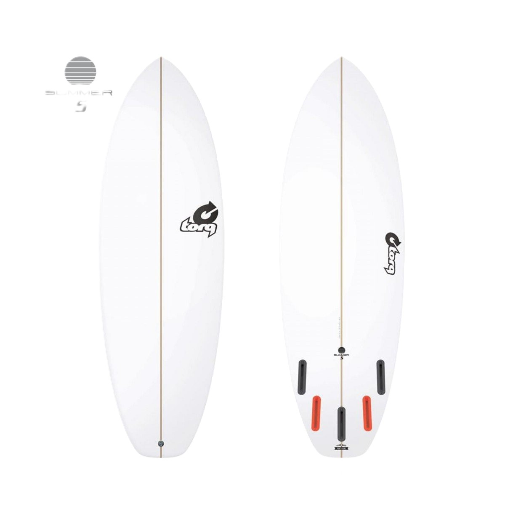

Per cada taula de surf de poliester es produeix 5kg de rebuig que es
casi la meitat del pes total de la taula.

La economía
Circular puede ser una de las soluciones, a la vez que una concienciación
tanto de los deportistas como de las propias escuelas de deportes acuáticos.
Javi, de la escuela Radikite, menciona la importancia de concienciar especialmente
a las escuelas e instructores de kitesurf para contribuir en la transmisión de valores
a los practicantes de deportes acuáticos.